At a glance
A gamified learning platform with structured roadmaps for 52 tech roles. Each skill node gives you a place to learn, practice, test yourself, find resources and prepare for interviews, with an AI mentor alongside.
Overview
Career Learning OS is a web platform for students, career switchers and junior engineers who want a clear path into a tech role. It replaces static roadmap diagrams with interactive skill nodes. Every node bundles an explanation, practice exercises, quizzes, curated resources and interview questions, and XP and streaks help learners stay consistent.
The problem
People learning tech skills jump between random tutorials with no clear path to a job-ready skill set. Existing roadmaps are mostly static diagrams: they show what to learn, but offer no practice, no testing and no way to track progress. Learners lose momentum, and nothing tells them whether they are actually ready for a role.
The solution
Pick a target role, such as Frontend, Backend, ML, DevOps or Security, and the platform lays out an ordered path of skill nodes from beginner to advanced. Each node is a small learning workspace. A daily planner suggests what to do next, a quiz arena reinforces knowledge, and an AI mentor gives guidance that takes the chosen role into account. Progress is saved to the learner's account and syncs across sessions.
Key features
- 52 career roles across Frontend, Backend, Mobile, DevOps, Data, AI/ML, Security and more, with ~150 skill nodes, each with time estimates.
- Skill Lab: 5 tabs per node
- Learn: concept explanations, key points, annotated code examples
- Practice: coding and short-answer exercises, with answers saved
- Test: MCQ, True/False and Fill-in-the-Blank with instant feedback
- Resources: curated links with type, free/paid, author and duration badges
- Interview: questions by difficulty and category, with hints and sample answers
- Quiz Arena: 4 modes (All, MCQ, True/False, Fill-blank), filtered by role, with 5–30 questions per round, a 30-second timer, explanations and a results review.
- Gamification: XP for quizzes, exercises and interview practice, daily streaks, and an XP chart.
- Daily Planner: suggested learn, practice, quiz and revise tasks.
- AI Mentor: a chat that knows the selected role and keeps its history.
- Accounts: sign in with GitHub, Google or email/password. Guests' progress stays on their device and syncs once they sign in.
How it works
Roadmap content is defined as structured data (roles → ordered skill nodes → learn/practice/test/resources/interview content). A React context store holds learner progress. Guests keep progress in localStorage, and signed-in users sync it to Postgres through an authenticated progress API. The AI Mentor sends role-aware prompts to an LLM and falls back to built-in answers when no model is available, so the feature never breaks.

Tech stack
| Layer | Technology |
|---|---|
| Framework | Next.js 16 (App Router), TypeScript 5 |
| UI | React 18, Tailwind CSS 3 (custom tokens), Framer Motion 11, Material Symbols, Space Grotesk |
| Charts | Recharts 3 |
| Auth | Auth.js (NextAuth v5) with GitHub, Google and email/password (bcrypt), Prisma adapter |
| Database | PostgreSQL on Neon, Prisma 7 with the pg driver adapter |
| State | React Context + localStorage, synced to the database for signed-in users |
| AI | OpenAI-compatible chat completions, with an offline fallback |
| Tooling | ESLint, PostCSS, Autoprefixer |
Engineering highlights
- Guest-first progress with account sync. Learners can start without signing up. Their progress lives locally and moves to their account when they sign in, which removes friction at the top of the funnel.
- Graceful AI degradation. The mentor always responds: it uses the LLM when one is configured and built-in guidance otherwise.
- One content model for many features. A single role → node → content schema drives the dashboard preview, Skill Lab tabs, Quiz Arena filters and daily planner suggestions.
- Multi-provider auth with hashed credentials and a Prisma-backed session model.
- Production build verified. All 16 routes compile in a Next.js production build.
- A distinct visual identity. The "Electric Kinetic" dark theme uses radial progress components and an XP chart.
Challenges & what I learned
- Content at scale. Writing 52 roles and ~150 nodes showed that content structure matters as much as code. Next, I'm moving content from a large typed data file into the database with an admin CMS, so it can be edited and contributed to by others.
- Keeping guest and account state consistent. Merging local progress into a server record taught me to design the sync path early, not as an afterthought.
- Designing for habit, not just information. XP values, streaks and short daily tasks were tuned to make coming back each day easy.
Status & what's next
The platform is a working beta: all pages and features are built and the production build passes. It is not yet publicly deployed, and the LLM integration for the AI Mentor is being finalized. Planned next:
- Public deployment and route protection for signed-in areas
- Adaptive roadmap generator (skill level + hours per day → weekly plan)
- Visual roadmap graph view
- Spaced-repetition review of missed questions
- AI-generated quizzes and hints
- Mock interview mode
- Capstone projects and certificates
- Integration into a wider career suite (roadmap → skills → LinkedIn profile → resume)